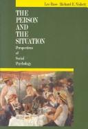

《人与情境》
书·Lee Ross, Richard E. Nisbett, 1991·The Person and the Situation: Perspectives of Social Psychology

罗斯与尼斯贝特说明人们总低估情境的力量，高估个人品质，并讨论其后果。
- 作者
- Lee Ross, Richard E. Nisbett
- 年份
- 1991
- 难度
- 进阶
- 类型
- 理论原著
- 所属学派
- 归因理论
- 核心理论
- 基本归因错误
版本
- 中文版 《人与情境 (第2版)》 [美] 李·罗斯 / [美] 理查德·E.尼斯贝特 · 蒋奖 译 · 机械工业出版社 · 2022 豆瓣 7.2 分（34 人评价） 豆瓣页面 ↗
- 英文版 The Person and the Situation: Perspectives of Social Psychology Lee Ross, Richard E. Nisbett · Pinter & Martin, reissue · 2011 Open Library ↗